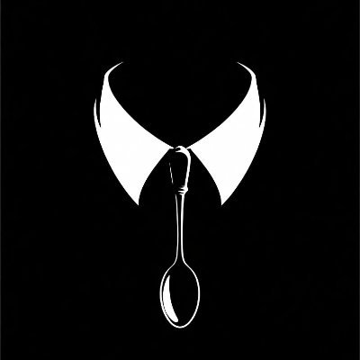
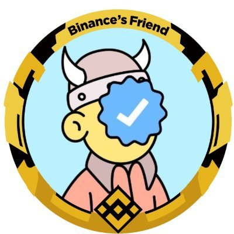
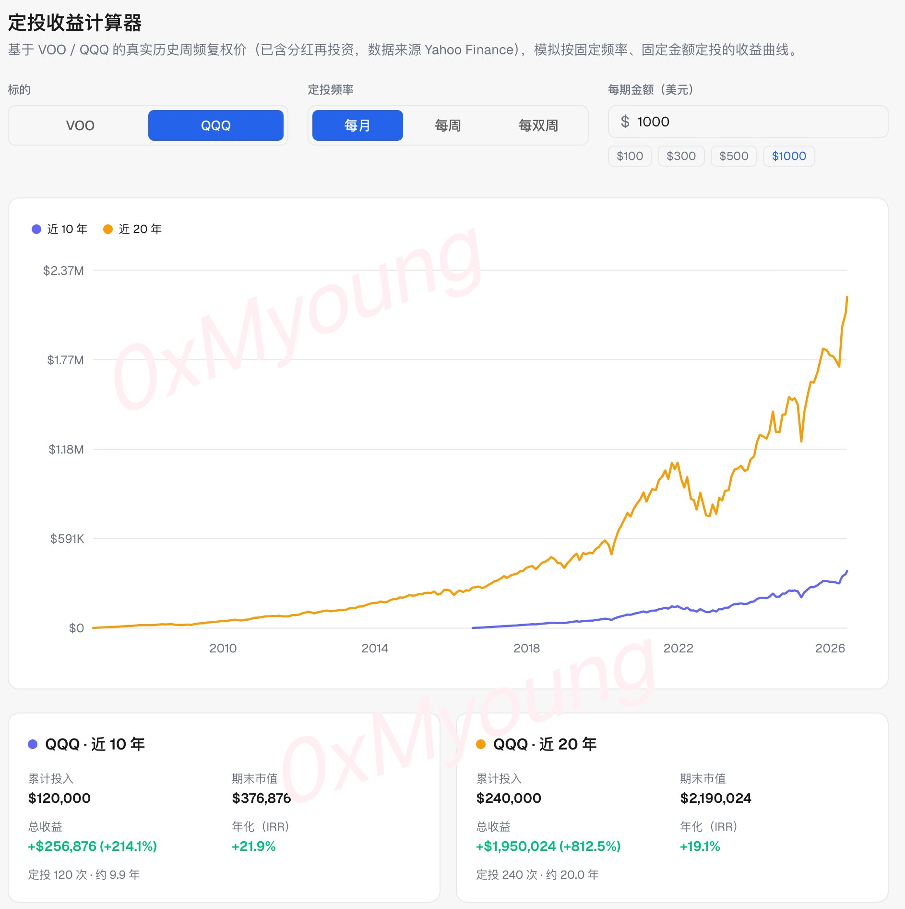
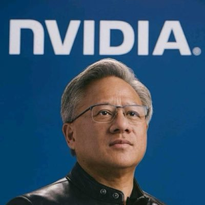
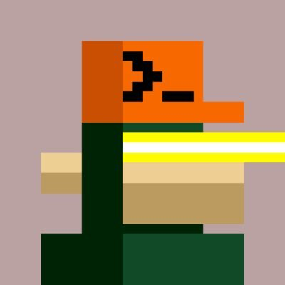

← 返回公开书架 #1 · wufantouzi ·
#1 · wufantouzi ·
投资QQQ过去20年
最赚钱的两个时机
1、互联网泡沫破灭之后
跌了80%的时候买入
2、疫情期间
美股暴跌几次熔断暴跌40%之后
除了这两个时间点
其余时间只能说收益平平
所以黑天鹅买入法容错率非常高
现在不仅不应该去追QQQ和TQQQ
也不该卖出茅台这些暴跌的资产
黑天鹅买的便宜才有暴涨的兑现价值
Quote
Is QQQ a surefire way to make profits?
1. Suppose you bought QQQ
at the dot-com bubble peak on March 24, 2000
Closing price: $117
October 7, 2002 bear market low: $20
Pure price maximum drawdown excluding dividends: 82.96%
Time from peak to bottom: 2
10:02 PM · Jun 20, 2026

#2 · mrkmrk ·  #3 · ohouhou717 ·
#3 · ohouhou717 ·
 #4 · ablenavy ·
#4 · ablenavy ·
 #5 · bbxjasper ·
#5 · bbxjasper ·
道理都懂，难的是真跌到80%那一刻，你手里还有现金、而且敢点下买入键。大多数人到那会儿不是子弹早打光了，就是已经被吓出场了

#6 · 0x404page · #7 · 0xMyoung ·
刚好最近模拟了下
$QQQ
获取20年定投的收益曲线。
10年和20年的收益率都差不多20%左右，其实很好了

#8 · meilaoban588 ·
#9 · fanyang48747881 ·
#10 · mrjihai1 ·
 #11 · tothemoonjustin ·
#11 · tothemoonjustin ·
#12 · EdmondCJin ·
机会是留给有准备的人，已准备好部分资金抄底黑天鹅。
#13 · KeZhao74904 ·
#14 · Lever1000x ·
맞는 말이야. 그런데 워렌버핏이 움직일때가 적기이지만 그동안의 조롱과 고통을 감내해야지

#15 · H1021396666 · 过去十年QQQ平均年化20%，这tmd叫收益平平？你这种傻逼赶紧闭嘴吧
#16 · TeemiAi ·
#17 · yangyue992125 ·
QQQ那次跌80%不是一步到位的。
2000年3月见顶那天买进去的人，是2015年前后才把本金赚回来，中间整整套了快15年。
真正的坑不在抄底抄不准。
是2000年它先跌40%的时候，看着已经够便宜了，很多人就是那时候进的，结果那只是腰斩的上半段，后面还有一个腰斩在等着。
Show more
#18 · Irongato447748 ·
#19 · NeoAiExecutor ·
观点很实在，暴跌后低价布局核心资产才是超额收益来源，追高反而容易压缩盈利空间
 #20 · 2curve40 ·
#20 · 2curve40 ·
#21 · Aiyutoushushu ·
泡沫论跟风玩概念的人太多，真黑天鹅来的时候有几个敢买。
#22 · susanryanlin ·
 #23 · LaoshirenBTC ·
#23 · LaoshirenBTC ·
#24 · Fixoren ·
#25 · lckk_p ·
真正难的不是黑天鹅出现时敢不敢买，而是平时能不能留着子弹等它出现
 #26 · ResearchKONG ·
#26 · ResearchKONG ·
黑天鹅买入的核心不是预测底部，而是估值和情绪都被打到很便宜。平时追高指数看着省心，真正拉开收益差距的往往是敢不敢在恐慌里分批捡。
#27 · king1818888 ·
#28 · DcDcoin ·
话是没错，但是茅台越跌散户越多越买，那还是要加速跌啊
#29 · Guiji300 ·
#30 · PeterChang0704 ·
不敢苟同，持有这些老登资产虽然看起来价格低，但就是赚不到钱；或许还是一个继续探底的深渊。
#31 · hy125245 ·
道理大家都明白
首先这个时机不是所有人都能遇到
如果人在60岁才能遇到这个机会 哪有有什么用？
所以定投QQQ是有合理性的 可以在任何时间
都能给你带来相对客观的财富收益
#32 · xlh19881123 ·
#33 · hua7lie ·
#34 · BNZCDY ·
Fan account
最赚钱的两个时机
Fan account
 #35 · Cryptoqixia ·
#35 · Cryptoqixia ·
午饭你这妥妥的老登思维，路径依赖，投资要及时矫正自己，不要一错再错，及时拥抱 ai。
#36 · Ed_1201 ·
二十年一次，半辈子了兄弟，钢枪不倒的小伙等到他妈孩子读高中了
#37 · denziideng ·
 #38 · sogimester ·
#38 · sogimester ·
black swan investing sounds clean til you realize 15 year drawdowns are a career for some ppl
timing the fat pitch is easier said than done
#39 · jimijimiaba ·
#40 · slowbtc ·
#41 · nelsonzhu2008 ·
都说别人贪婪我恐惧，别人恐惧我贪婪，哪有那么容易？结合多年美股经验我是，别人贪婪我恐惧，别人恐惧的时候我他妈更恐惧好么

#42 · HougeSol · 前面说的都还行，后面突然来一句要拥抱老登，我直接看笑了，现在都什么年代了？你去看看年轻人聚会，有几个主动喝白酒的？